Adrianna Janik, Kris Sankaran, Anthony Ortiz
ada.janik@gmail.com
Montreal Institute for Learning Algorithms
Agenda:
- Interpretability
- Remote Sensing
- Building Detection
- Use Case: Niger State
- Deep Model: U-Net
- Interface
- Demo
- Method
- Clustering
- Conclusion
Interpretability
according to Ribeiro et al. (2016):
If the users do not trust a model or a prediction, they will not use it
Wildelife Detection
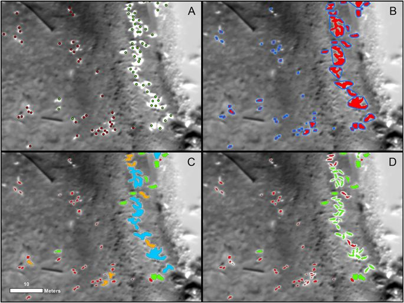Vehicles Detection
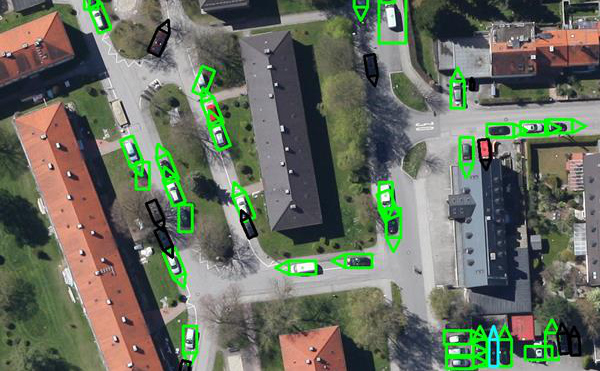Plane Detection
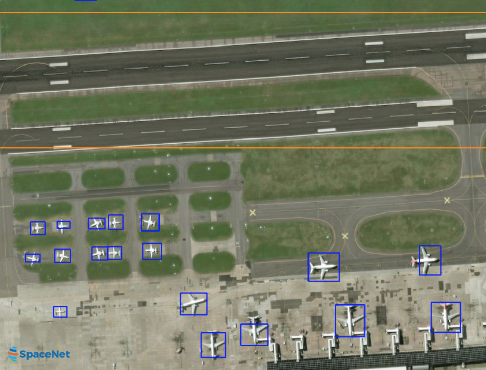Boats Detection
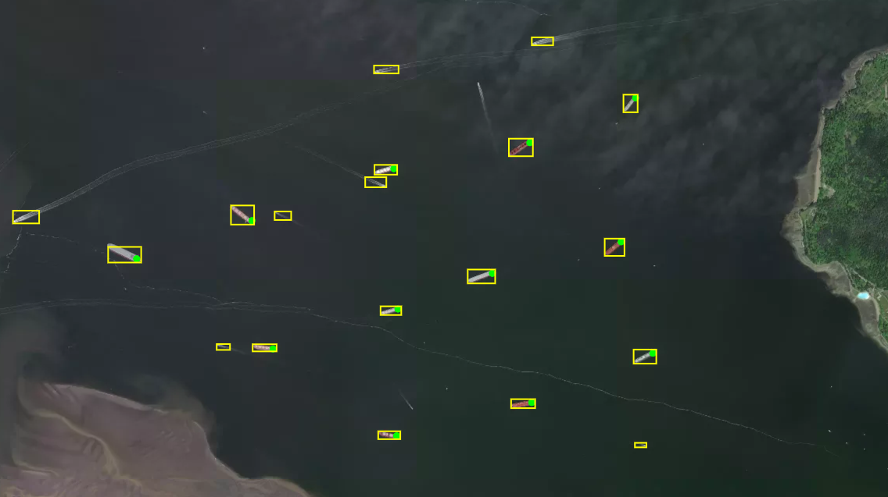Road Detection
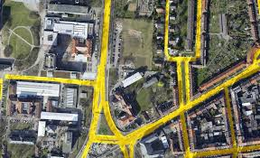Land Coverage
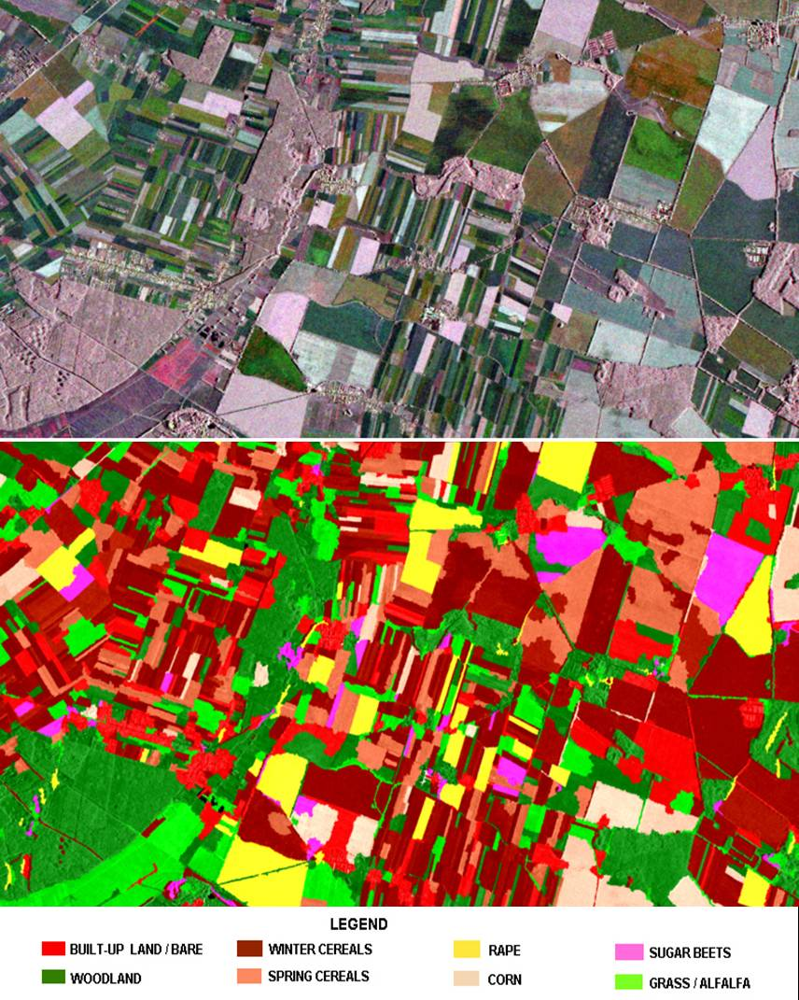Building Detection
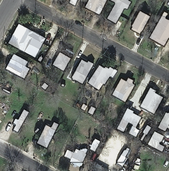GOAL: Population Estimation
- epidemiological analysis
- disease surveillance
- logistical planning
Dataset: Inria Aerial Image Labeling, sattelite images of cities from Europe and America
Niger State
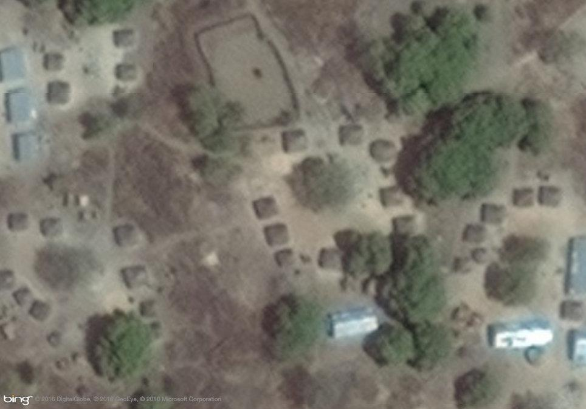 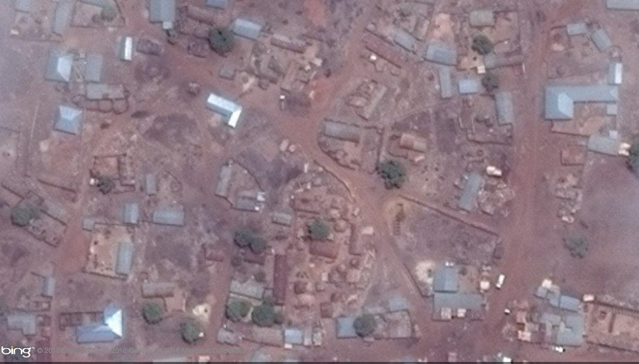U-Net


Convolutions
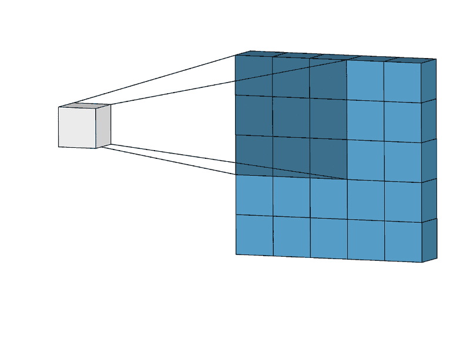 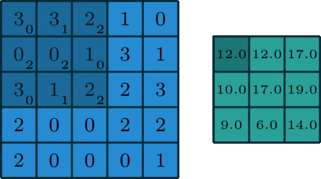Max Pooling

Interface
Method
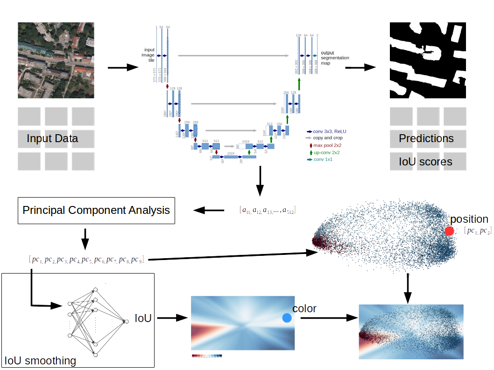Inference
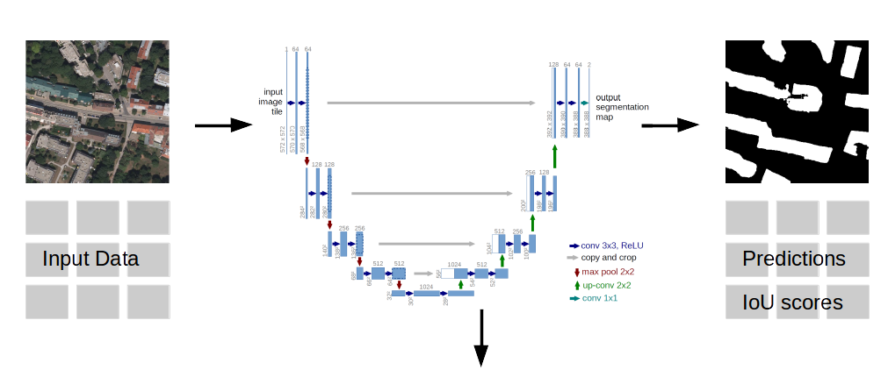IoU Smoothing
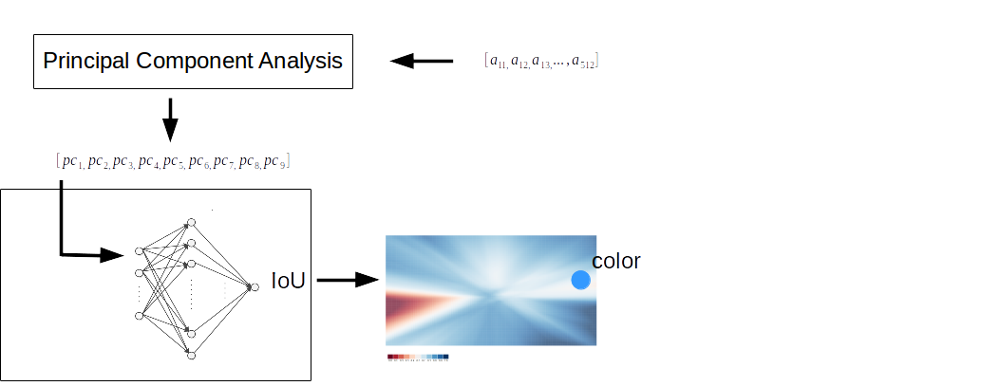Scatter Plot
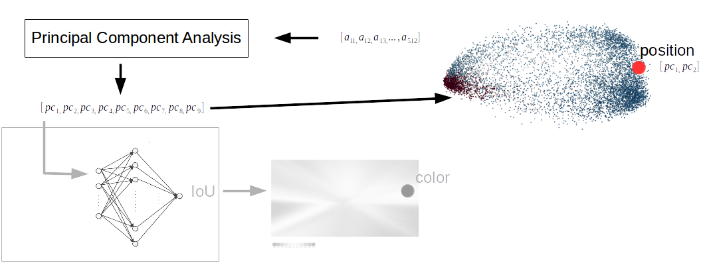Combined View
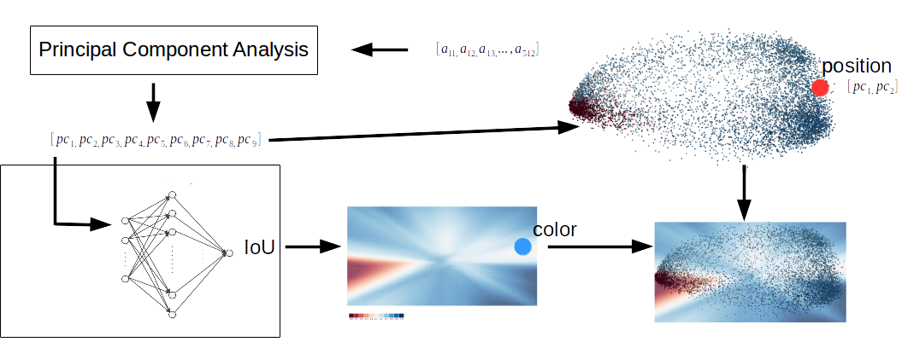Clustering
Is it a desired generalization?
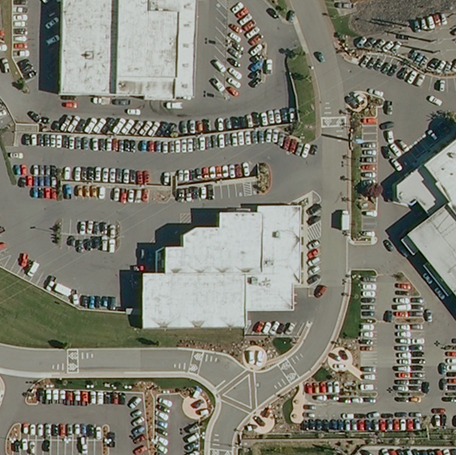 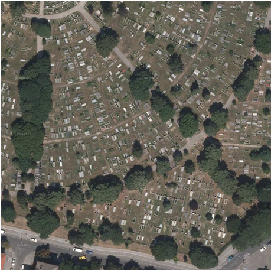Conclusion
Error I: Ground truth error - time mismatch.
Model predicted correctly absence of buildings.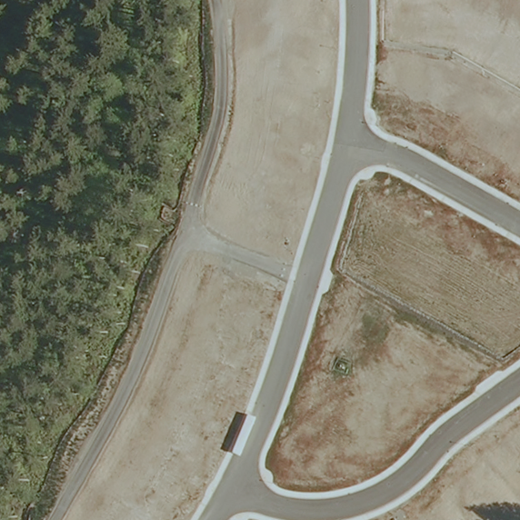
Error II: Non-building annotated as building.
Barges were annotated as buildings.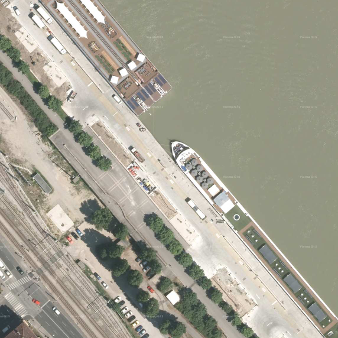 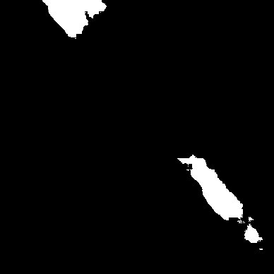
Error III: Not detecting building.
Building with antenas on top is not detected.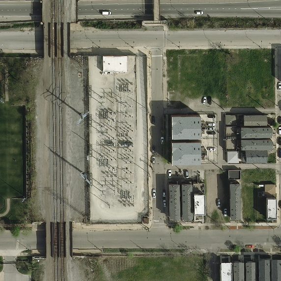 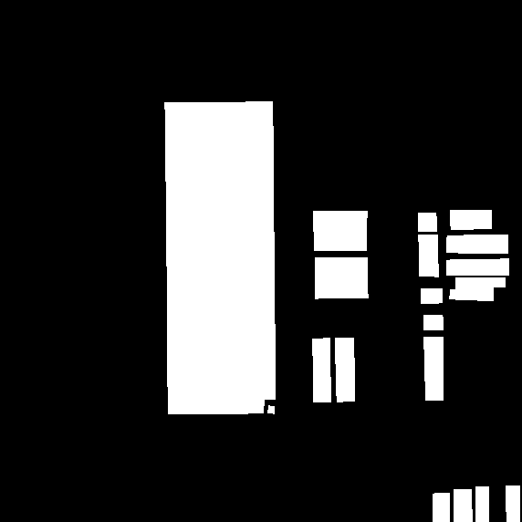 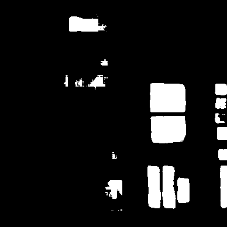
Example Use Case
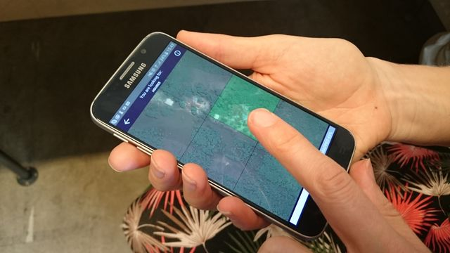 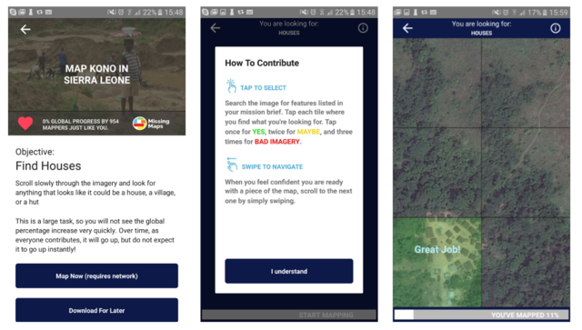
References
Doshi-Velez, Finale, and Been Kim. 2017. “Towards a Rigorous Science of Interpretable Machine Learning.” arXiv:1702.08608 [Cs, Stat], February. http://arxiv.org/abs/1702.08608.
Dunteman, George. 2019. Principal Components Analysis. Newbury Park, California. doi:10.4135/9781412985475.
Goodman, Bryce, and Seth Flaxman. 2016. “European Union regulations on algorithmic decision-making and a ”right to explanation”.” arXiv E-Prints, June, arXiv:1606.08813.
Guidotti, Riccardo, Anna Monreale, Salvatore Ruggieri, Franco Turini, Dino Pedreschi, and Fosca Giannotti. 2018. “A Survey of Methods for Explaining Black Box Models.” arXiv:1802.01933 [Cs], February. http://arxiv.org/abs/1802.01933.
Hohman, Fred, Minsuk Kahng, Robert Pienta, and Duen Horng Chau. 2018. “Visual Analytics in Deep Learning: An Interrogative Survey for the Next Frontiers.” arXiv:1801.06889 [Cs, Stat], January. http://arxiv.org/abs/1801.06889.
Hunt, Amelia, and Doug Specht. 2019. “Crowdsourced Mapping in Crisis Zones: Collaboration, Organisation and Impact.” Journal of International Humanitarian Action 4 (1). doi:10.1186/s41018-018-0048-1.
Keim, D. A. 2002. “Information Visualization and Visual Data Mining.” IEEE Transactions on Visualization and Computer Graphics 8 (1): 1–8. doi:10.1109/2945.981847.
Kim, Been, Martin Wattenberg, Justin Gilmer, Carrie Cai, James Wexler, Fernanda Viegas, and Rory Sayres. 2017. “Interpretability Beyond Feature Attribution: Quantitative Testing with Concept Activation Vectors (TCAV).” arXiv:1711.11279 [Stat], November. http://arxiv.org/abs/1711.11279.
Kingma, Diederik P., and Jimmy Ba. 2014. “Adam: A Method for Stochastic Optimization.” arXiv:1412.6980 [Cs], December. http://arxiv.org/abs/1412.6980.
Maggiori, Emmanuel, Yuliya Tarabalka, Guillaume Charpiat, and Pierre Alliez. 2017. “Can Semantic Labeling Methods Generalize to Any City? The Inria Aerial Image Labeling Benchmark.” In 2017 IEEE International Geoscience and Remote Sensing Symposium (IGARSS), 3226–9. Fort Worth, TX: IEEE. doi:10.1109/IGARSS.2017.8127684.
Ribeiro, Marco Tulio, Sameer Singh, and Carlos Guestrin. 2016. “‘Why Should I Trust You?’: Explaining the Predictions of Any Classifier.” arXiv:1602.04938 [Cs, Stat], February. http://arxiv.org/abs/1602.04938.
Ronneberger, Olaf, Philipp Fischer, and Thomas Brox. 2015. “U-Net: Convolutional Networks for Biomedical Image Segmentation.” arXiv:1505.04597 [Cs], May. http://arxiv.org/abs/1505.04597.
Rumelhart, David E, Geoffrey E Hinton, and Ronald J Williams. 1985. “Learning Internal Representations by Error Propagation.” California Univ San Diego La Jolla Inst for Cognitive Science.
Spence, Robert. 2007. Information Visualization: Design for Interaction. 2 edition. Harlow: Pearson.
Tomsett, Richard, Dave Braines, Dan Harborne, Alun Preece, and Supriyo Chakraborty. 2018. “Interpretable to Whom? A Role-Based Model for Analyzing Interpretable Machine Learning Systems.” arXiv:1806.07552 [Cs], June. http://arxiv.org/abs/1806.07552.
Wu, Chenyue, and Esteban G. Tabak. 2017. “Prototypal Analysis and Prototypal Regression.” arXiv:1701.08916 [Stat], January. http://arxiv.org/abs/1701.08916.
Yosinski, Jason, Jeff Clune, Anh Nguyen, Thomas Fuchs, and Hod Lipson. 2015. “Understanding Neural Networks Through Deep Visualization.” arXiv:1506.06579 [Cs], June. http://arxiv.org/abs/1506.06579.
Yu, Wei, Kuiyuan Yang, Yalong Bai, Hongxun Yao, and Yong Rui. 2014. “Visualizing and Comparing Convolutional Neural Networks.” arXiv:1412.6631 [Cs], December. http://arxiv.org/abs/1412.6631.
Images
Max Pooling:https://computersciencewiki.org/
U-Net:https://towardsdatascience.com/
Wildelife detection:https://www.nature.com
Animals detection:https://www.gislounge.com/
Road detection:https://www.cv-foundation.org/
Land Coverage:http://www.igik.edu.pl
Car detection:https://www.dlr.de/
Boats detection:http://gbdxstories.digitalglobe.com/
Plane detection:https://www.google.com/imgres?imgurl=https%3A%2F%2Fcdn-images-1.medium.com
{kind=link}
Interpreting Black-Box Semantic Segmentation Models
in Remote Sensing Applications
Adrianna Janik, Kris Sankaran, Anthony Ortiz
ada.janik@gmail.com
Montreal Institute for Learning Algorithms